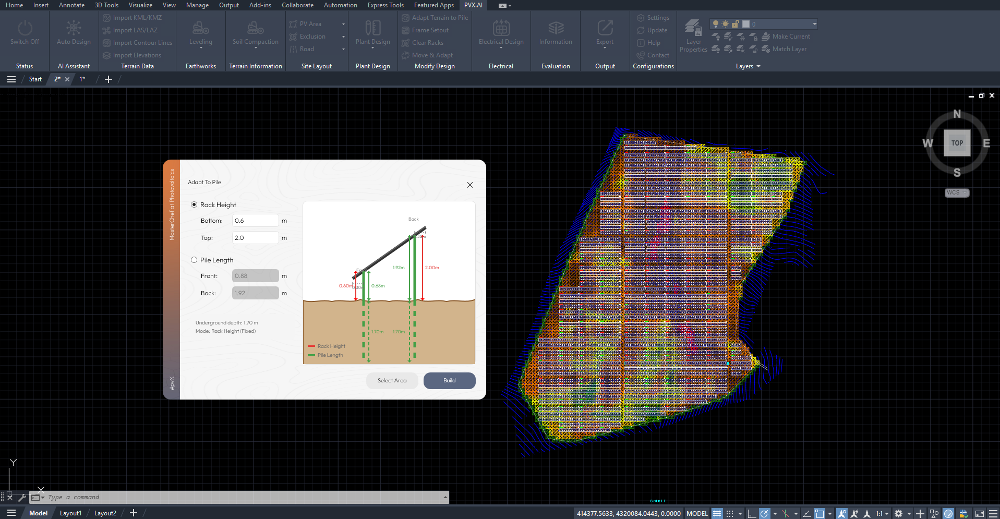
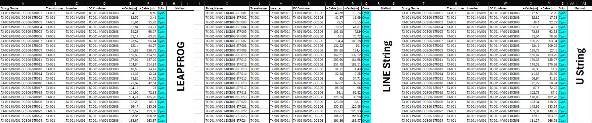
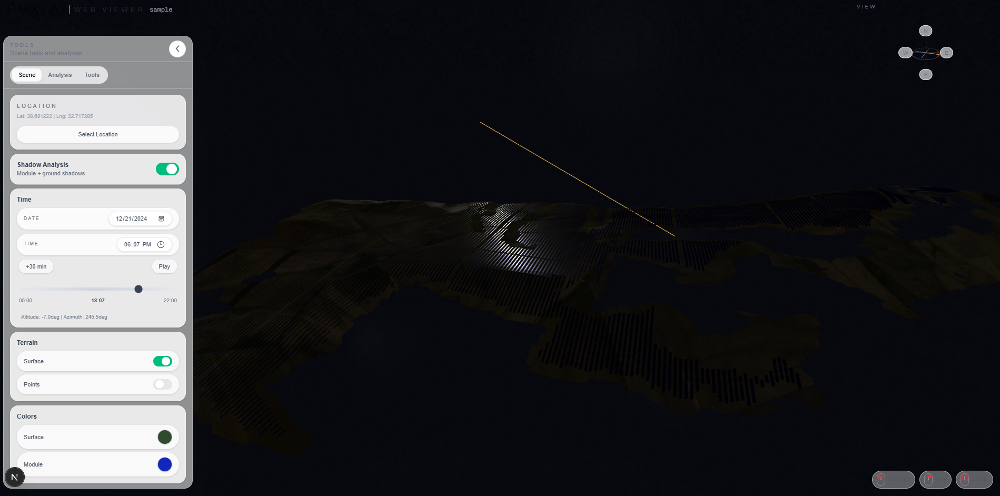
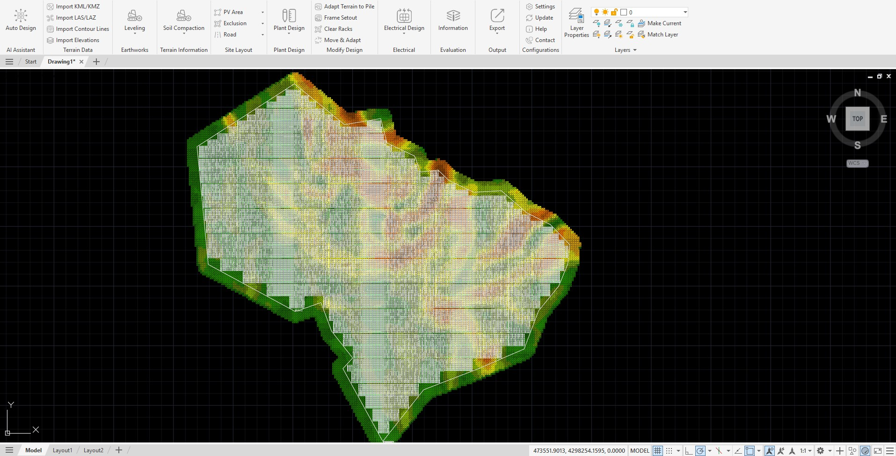

Case Studies
Teknik case study arşivi
Mevcut çalışmaları yalın bir listede inceleyebilirsiniz.

Case 01Terrain optimization and cut-fill comparison
Arazi eğim analizi ve hafriyat senaryolarının tasarım üzerindeki etkisini inceleyen teknik çalışma.

Case 02String cable comparison in utility scale projects
Farklı kablolama senaryolarının uzunluk, kayıp ve saha uygulanabilirliği açısından değerlendirilmesi.

Case 03PVsyst report interpretation
Enerji üretim raporlarının teknik risk ve tasarım kararları açısından yorumlanması.

Case 04BESS peak shaving ve clipping davranışı
Depolama stratejisinin üretim profilinde yarattığı teknik etkileri ele alan karşılaştırmalı çalışma.